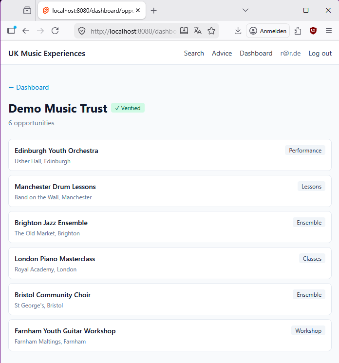
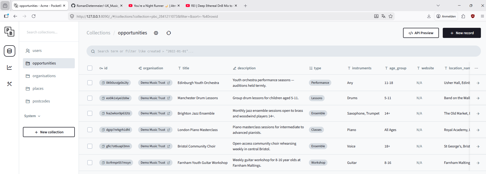

UK Music Experiences
- What the platform will do. Musicians can search a UK map for classes, workshops, ensembles, performances, lessons, and music projects near them — filtering by instrument, age group, and distance. Organisations can register, log in, and add / edit / delete their own listings once they're verified by an admin.
- Hosting. A reasonable worst-case estimate is around €10 a month, roughly €240 over two years. That's for a small dedicated server with automatic HTTPS and daily backups.
- Capacity. PocketBase (the database engine used here) can comfortably handle the traffic levels this kind of platform realistically sees, with plenty of headroom.
- No recurring software fees. Everything is open-source. No per-user licence, no mapping-API bill, no SaaS lock-in. If the hosting provider ever disappears, moving to another one is roughly a day of work.
What the platform will do
For musicians (no account needed)
- A map-first search. Open the site, see a map of the UK with a pin for every opportunity: classes, workshops, ensembles, performances, music lessons, community projects. Click a pin for a quick summary; click a card in the sidebar for the full description.
- Flexible filters. By instrument, by age group, by opportunity type, by postcode or place name (e.g. "Farnham" or "GU9 7AH"), by distance radius (5 – 100 km).
- Nearby opportunities first. The platform knows every live UK postcode and every named UK town or village, so "show me things near me" works immediately — no reliance on Google Maps or any paid service.
- Advice page for musicians — a simple static page that can carry whatever guidance you want to share.
For organisations (after being verified by an admin)
- Register and log in with email and password.
- Add, edit, and delete their own listings. Title, description, type, instruments, age group, location, website link, and expiry date. Listings can be entered in advance (e.g. a workshop 10 days from now) and hidden automatically once the date passes.
- Multiple addresses per organisation — a music school with two locations can keep both on one account and attach each listing to the relevant address.
- A profile area to keep the organisation's name, description, and contact details up to date.
For the admin (you)
- Verify new organisations before they can publish anything — a deliberate safeguard, especially important where listings involve minors.
- Admin panel built into PocketBase — a spreadsheet-style view of every record, with search, filter, sort, and inline editing. No developer needed to manage data day-to-day.

Architecture — in plain English
The platform is built from three simple parts, all living on the same small computer rented from a hosting provider. A useful way to picture them:
In technical terms: the "shop window" is built with SvelteKit (which produces plain HTML and JavaScript files). The "filing cabinet" is PocketBase — one small program that quietly does the job of a database, a login system, a file store, and an admin panel all at once. The "receptionist" is Caddy, which also takes care of HTTPS certificates automatically and at no cost.
What isn't in the picture, on purpose:
- No separate database server to maintain.
- No Docker, no Kubernetes, no cloud console. The whole thing is two small programs running side by side.
- No paid third-party services for maps, mailing, postcode lookups, or anything else required to make the site work.
If the hosting provider ever goes out of business, the entire platform is a folder you can copy to another server — typically about a day of work to get running again.
The admin side
PocketBase ships with its own admin interface — a web page the admin (you) logs into to see every organisation, opportunity, and user. It works like a spreadsheet, with search and filters. Editing a record is a click.

Everything the admin needs for day-to-day operation is already included here, at no extra development cost.
Hosting and cost
The platform is designed to run cheaply. A small Linux virtual server — for example from Hostinger or Hetzner — is more than sufficient. These start around €5 / month on promotional pricing, and settle at around €8 – 10 / month at standard rates after renewal. Planning on €10 / month gives breathing room for small upgrades, backup storage, and any surprise traffic.
What that monthly fee includes:
- HTTPS (the green padlock icon) managed automatically — certificates are free and renewed without any manual intervention.
- No vendor lock-in. Hosting providers come and go; the whole platform is a folder. Switching is straightforward.
How many people can it handle?
PocketBase is designed to be fast and memory-efficient for read-heavy workloads like this one (where most traffic is people browsing, not people writing). On a small server it comfortably handles the scale of traffic a regional / national directory platform realistically sees — hundreds of simultaneous visitors, with plenty of room to grow.
If traffic ever outgrows a small server, upgrading the hosting plan is a matter of minutes — not a rewrite. The same stack scales to many times this size without structural changes.
Your questions, addressed
Point-by-point response to the original kickoff notes, framed as what is feasible and how it would fit in.
| Your question | How it fits |
|---|---|
| Three user types: musicians, organisations, researchers | Musicians and organisations are the two primary groups. A dedicated "researcher" role isn't strictly needed up front. Researchers could instead be served by a daily pre-built CSV (or similar static download) made available on the website. A research-specific role with tailored views can be added later if the need becomes concrete. |
| Instrument search | A search field on the public page; can be a free-text box or a dropdown of common instruments. |
| Age-group search — “click all age ranges that apply” | A multi-select of checkboxes aligns with the kickoff note: pick every age range that applies rather than typing one value. Straightforward to implement as a set of checkboxes. |
| Participant limits | Can be added as a small field on each listing, with a counter for how many people are currently registered. |
| Participants restricted by where they live | Organisations can mark a listing as local-only and attach a postcode area or region. If users provide their own postcode when they register, the platform can use it to filter listings — either hiding location-restricted events from people outside the eligible area, or preventing them from registering. Every UK postcode is already stored, so the location check is straightforward. |
| An API will probably be needed | A full REST API comes built-in with PocketBase at no extra cost — no separate development work is required for it. |
| Expiry dates on listings | A date field on each listing. Anything past its expiry date is hidden from public search automatically. |
| Enter future dates in advance (e.g. 10 days out) | Same mechanism — a start / end date pair. |
| Account verification | Standard email-and-password accounts. Admin approval is required before an organisation can publish. |
| Should users be allowed to verify organisations? | Keeping verification admin-only is the safer default — especially given the safeguarding stakes. Worth reconsidering later only if volume makes admin-only verification too slow. |
| Statistical evaluation over time and regions | The data is naturally there — number of listings, type, date, region. A small charts page can be added as a separate, bounded piece of work. |
| What is unnecessary, impossible, or simplest? | Covered in the architecture section. In short: the approach removes every piece that doesn't earn its keep (no separate database, no complex cloud service, no paid APIs) while keeping everything that is genuinely useful. |
What the platform includes
The bundle below is what the core platform provides. Anything in the "optional extensions" column is feasible but separate — each can be decided on independently based on time and priority.
Core platform
- Public map + search with filters
- Opportunity detail pages
- Organisation accounts: register, log in, log out
- Organisation dashboard for managing their own listings
- Admin verification flow for new organisations
- Built-in admin panel (PocketBase) for data management
- Automatic HTTPS (secure green-padlock connection)
- Every UK postcode and every named UK town / village for proximity search
- Deployable as a standalone site or under a subfolder of an existing domain
Optional extensions
- Multi-select age-range checkboxes
- Participant limits and residence restrictions on listings
- Statistics / charts dashboard
- Custom icons per opportunity category on the map
- Email notifications (password reset, "matching opportunity" alerts)
- "Log in with Google" as an additional trust signal
Appendix — the tech stack, explained
For completeness, in case this report is shared with a developer. Each row names the tool and explains why it's there in plain language.
| Website | SvelteKit — a tool that takes the website design and produces a folder of plain HTML, CSS, and JavaScript files. Those files load quickly anywhere. |
|---|---|
| Map | Leaflet with CartoDB map tiles. Both free to use, no account or API key required. The map looks professional but costs nothing to run. |
| Database & login system | PocketBase — one small program that quietly handles the database, user accounts, file uploads, an automatic API, and the admin panel. Open-source. |
| Database storage | SQLite, used internally by PocketBase. It's a single file on the server's hard drive — backing up the whole database is as simple as copying that file. |
| Front door (HTTPS, routing) | Caddy — a small program that handles the secure connection and routes each visitor to the right place. Manages HTTPS certificates automatically at no cost. |
| Postcode and place data | UK government open data (ONS Postcode Directory and OS Open Names), stored inside PocketBase. Every valid UK postcode and every named town / village is known to the platform. |
| Fallback for unusual addresses | For the rare case where a visitor enters something that isn't a recognised postcode or place name, the platform can consult Nominatim (the OpenStreetMap lookup service, free, no sign-up required). This is a small safety net so edge-case addresses still resolve. |
| Hosting | Any small Linux virtual server — Hostinger, Hetzner, and similar providers all fit. A conservative monthly budget of around €10 covers everything. |
| Operations | Two small programs (PocketBase + Caddy) running side by side. Both update by dropping in a newer version of the file. No rebuild, no container registry, no deployment pipeline needed. |
The guiding principle throughout: remove every piece that doesn't earn its keep. No separate database server, no cloud orchestration, no paid mapping service. What remains is what the platform cannot do without — a small, honest system that's cheap to run and easy to understand.